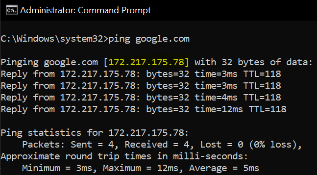

Home Server
Setting up a home server back in the days would cost a fortune: a reliable PC, a dedicated server room with appropriate cooling, a decent router and a spool of ethernet cable among other peripheral devices. Enter The Raspberry Pi!
The Raspberry Pi is a low cost, credit-card sized computer that plugs into a computer monitor or TV, and uses a standard keyboard and mouse. It is a capable little device that enables people of all ages to explore computing, and to learn how to program in languages like Scratch and Python. It’s capable of doing everything you’d expect a desktop computer to do, from browsing the internet and playing high-definition video, to making spreadsheets, word-processing, and playing games.
Exploring the limitless possibilities of what a Raspberry Pi can do is the perfect hobby for anyone who loves to tinker!
You can get the latest version, Raspberry Pi 4, for only US$35 and this gives you:
- 1.5GHz Quad Core processor
- 2GB, 4GB or 8GB DDR4 SDRAM
- WiFi connectivity
- Gigabit Ethernet
- 2 USB 3.0 ports; 2 USB 2.0 ports.
- 2 HDMI Ports with 4K60fps support
- Micro-SD card slot
- And more!
Of course a Pi will not be the same experience as having a regular Windows PC or an iMac. The operating system, Pi OS (formerly Raspbian), is based on a version of Linux called Debian. It comes with a Graphical User Interface (GUI) so it does look like a regular PC but that’s the closest of a similarity it can get. Most of the operations are done via a black-screen terminal and I had to forget all of the conveniences I am used to, like using a mouse for navigation, inserting a usb drive with plug-and-play experience, and having a Google Chrome as browser.
I have no prior experience with Linux and the last coding language I learned was C back in high school. So I spent a lot of time scouring the internet for DIY guides (thank you pimylifeup.com!).
No two Pi set-ups are exactly alike and every so often I get an error code that is so obscure that the last person who had the same experience posted his problem ages ago with no proper resolution. Either he figured it out on his own and didn’t bother to update his log or he just gave up in frustration and threw his Pi out the window.
I needed patience, a boat-load of patience, because one incorrect configuration could make the Pi go haywire and might require a last-resort reformat. Worst thing that happened to me was losing internet connectivity for 4 hours and missed an important online appointment!
Good thing I’m doing this on a Pi that ony costs a tiny fraction compared to a proper mainframe server!
Here are some of the projects I successfully implemented on my Raspberry Pi 4:
Apache
Web Server

The Apache HTTP Server Project is an effort to develop and maintain an open-source HTTP server for modern operating systems including UNIX and Windows. The goal of this project is to provide a secure, efficient and extensible server that provides HTTP services in sync with the current HTTP standards.
This website is hosted entirely by a Raspberry Pi running 24/7 in my closet. You may be wondering how that adds to my electricity bill so let’s try to work that out.
When running at 100% load x 4 CPUs, the Pi 4 is rated to consume 6.4 W or 154 Wh daily. In Japan that translates to 92 yen or about US$ 0.85 of additional electricity charge per month. Note that this is assuming all cores of the CPU are running at 100% load which is not the case if you are using the Pi as a server since it will mostly be on idle. My average CPU load with applications running in the background does not go beyond 10%.
Bottomline: you won’t notice any increase on your electricity bill.
Homebridge
Home Automation Server

Homebridge allows the integration of smart home devices that do not natively support Apple HomeKit. There are over 2,000 available plugins supporting thousands of different smart accessories.
Apple’s home automation app, HomeKit, is one of the best when it comes to user interface but it supports only a handful of smart home devices. Homebridge acts as a middleman or more aptly, a bridge, so I can control non-Apple-certified devices with my iPhone, including Siri Shortcuts.
Docker
Virtual Computing

Docker is a set of platform as a service products that use OS-level virtualization to deliver software in packages called containers. Containers are isolated from one another and bundle their own software, libraries and configuration files; they can communicate with each other through well-defined channels.
Having my Pi host multiple servers breeds a lot of complications. One way to avoid having one application mess up another is to create separate containers within Docker and have these processes run independently. In case I screw up on a configuration and need a fresh start, deleting and reinstalling a container is really convenient.
Pi-Hole
DNS Server

The Pi-hole is a DNS sinkhole that protects your devices from unwanted content, without installing any client-side software.
When you input a site like google.com on your browser, you are instructing your computer to connect to that website’s host. Since your computer can only communicate with 1s and 0s, the site name google.com needs to be translated to an IP address or 172.217.175.78 (at the time of writing). You can get the IP address of any website via a terminal with the command ping [space] website.
If you input the IP address directly on your browser, it would yield the same result as if you typed in the domain name. But who can remember 172.217.175.78 better than google.com?
A Domain Name Server (DNS), as the name suggests, contains a directory of all websites and their corresponding IP address. Think something like a very thick yellow pages phone book or the Contacts app on your phone if you're from a younger generation.
Pi-hole acts as a DNS for my local network. So whenever I want to access a website on my browser, my Pi would be the first point of contact and it will block incoming traffic from any blacklisted domains, which are mostly ad sites. Without the need to load ads, my browsing experience becomes a liitle bit faster and significantly less annoying.
Postfix + Dovecot
Mail Server
Postfix is a free and open-source mail transfer agent that routes and delivers electronic mail while Dovecot is an IMAP and POP3 server supporting the standard mbox and Maildir formats.
I can send and receive emails through my Pi without the need of a mailhost like gmail or yahoomail (anyone still uses this?). I can also personalize an email address using any customized domain I own, for example info@abadiez.com.
Through the combination of Postfix as my outgoing agent and Dovecot as my incoming server, I can access my personalized email account via any application and on any device that uses IMAP and POP3 like the Mail app on an Iphone, Thunderbird on a desktop, and so on.
Sounds awesome? Well, it can get complicated. Since my Pi is acting as a mail server, I need to protect it from spammers and phishers on my own so additional setups like TLS encryption and reverse DNS become absolutely necessary.
What's Next
I am just scratching the surface of what a Raspberry Pi can do as a home server. Future projects include Network Attached Storage, Media Streaming and an Arcade Game Server!
If you have any questions about setting up a Pi as your home server, feel free to reach out.